En esta lección se comentan las herramientas de desarrollador web incluidas en la versión estándar de Firefox. Existe también una versión especial de Firefox llamada Developer Edition, que está basada en Firefox Beta y que tiene además una configuración optimizada para las herramientas de desarrolladores (y alguna herramienta experimental todavía no disponible en la versión estándar de Firefox).
Selector de color
Un selector de color permite obtener el código RGB de los píxeles de la pantalla. En Firefox 31 (publicado en julio de 2014) se añadió un selector de color a las herramientas para desarrollador web .
Para abrir el selector de color, abra el menú de heramientas y seleccione la opción Desarrollador web ...
... en la lista de herramientas, seleccione la opción Recogecolor:
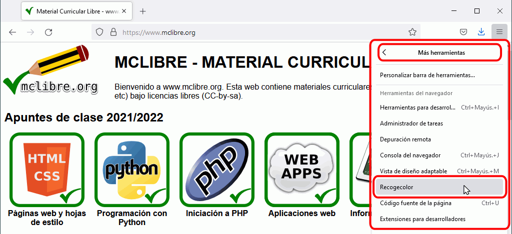
El cursor se convierte en una lupa que muestra el color del píxel central:
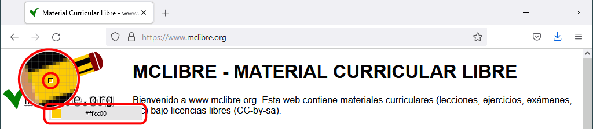
Al hacer clic, el valor del color en formato RGB se copia en el portapapeles y se cierra el selector de color.
La extensión ColorZilla incluye también un selector de color más sofisticado.
El selector de color (eyedropper) no tiene un atajo de teclado asociado: bug 1177108.
El selector de color no permite copiar los códigos de color en otros formatos que no sea RGB.
Herramientas para Desarrollador Web
Desde Firefox 16 (publicado en octubre de 2012), Firefox incluye una ventana de Herramientas para Desarrollador Web que facilita el análisis técnico de las páginas web. Estas herramientas son similares a las que ofrecen Chrome y Edge. Estas herramientas son herederas de una extensión de Firefox llamada Firebug, que desde 2017 ya no está en desarrollo.
En el blog Mozilla Hacks se pueden consultar las novedades sobre estas herramientas, que se van incorporando en cada nueva versión de Firefox.
Abrir la ventana de Herramientas para desarrollador web
La ventana de Herramientas para desarrollador web se puede abrir de varias maneras:
mediante el atajo de teclado Ctrl+May+I o la tecla F12
mediante el menú Herramientas > Desarrollador web > Alternar herramientas (para mostrar el menú, pulse la tecla Alt) podemos abrir tanto la ventana de herramientas como herramientas individuales:
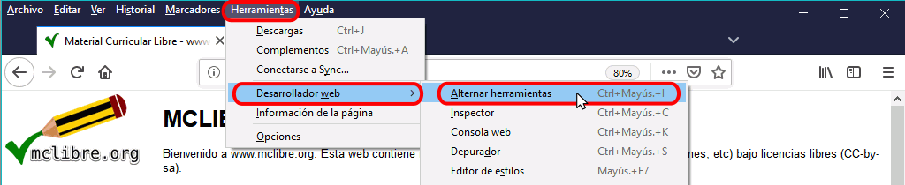
mediante el botón "Abrir menú" de la barra de dirección y eligiendo la opción "Desarrollador web" ...
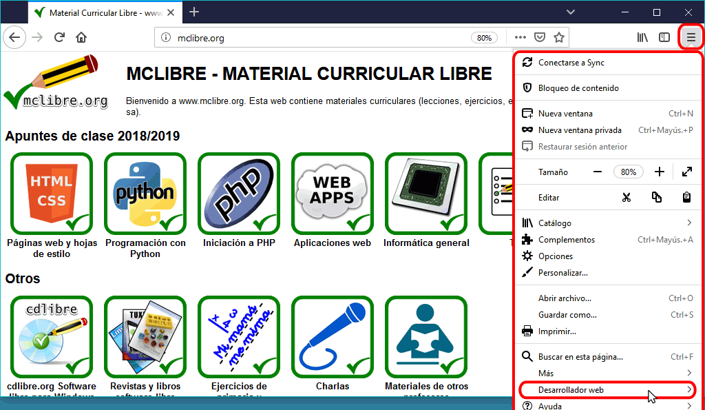
... se abrirá un menú de opciones similar al menú Herramientas > Desarrollador web en el que debe elegir la opción "Alternar herramientas":
La ventana de Herramientas para desarrollador web se abre en la parte inferior de Firefox. Esta ventana personalizable da acceso directo a casi todas las herramientas disponibles (y se pueden incluir el resto en caso necesario).
Cerrar la ventana de Herramientas para desarrollador web
La ventana de herramientas para Desarrollador Web se puede cerrar de varias maneras:
mediante el atajo de teclado Ctrl+May+I o la tecla F12
haciendo clic en el icono Cerrar situado en la parte superior derecha de la ventana de Herramientas de desarrollador web
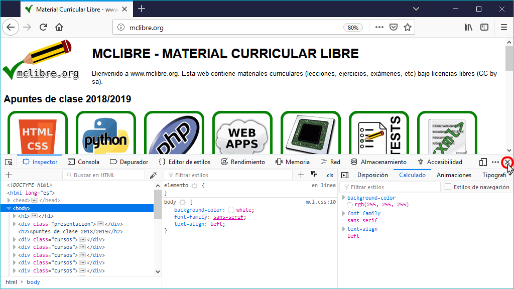
Elementos de la ventana de Herramientas para desarrollador web
La ventana de Herramientas para desarrollador web contiene su propio menú, que da acceso a cada una de las herramientas.
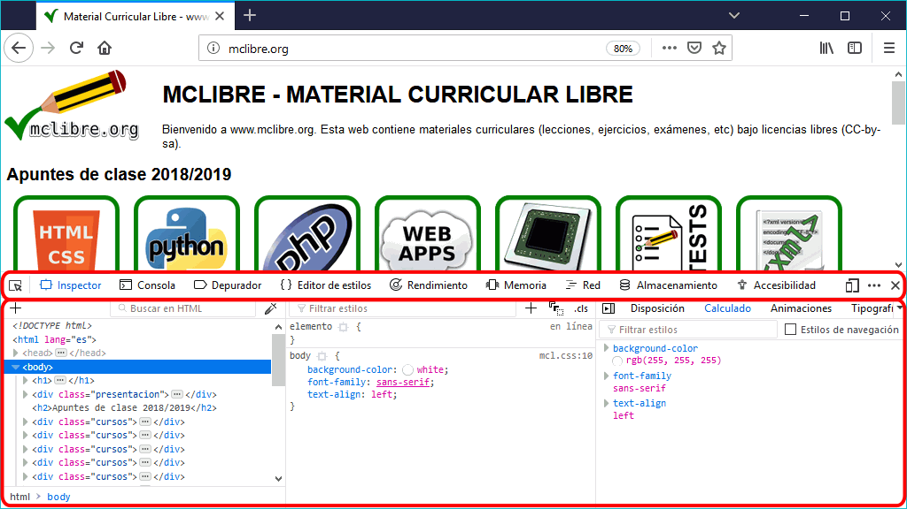
Vista de diseño adaptable (responsive mode)
La vista de diseño adaptable (en inglés, responsive mode) permite probar en Firefox cómo se visualizaría la página web en diferentes dispositivos móviles.
Para abrir la vista de diseño adaptable, haga clic en el icono situado en la parte derecha del menú de las herramientas de desarrollador (el icono representa un móvil y un tablet):
Para cerrar la vista de diseño adaptable, puede hacer clic en el icono que abre la vista o hacer clic en el icono de aspa del menú:
Puede modificar manualmente el tamaño del área de visualización del dispositivo emulado:
El menú de la vista de diseño adaptable permite elegir las características del dispositivo emulado:
Puede elegir un dispositivo específico de una lista (en la que se pueden añadir más dispositivos):
Puede especificar un tamaño concreto:
Puede cambiar la orientación del dispositivo (en vertical o apaisado):
Puede cambiar la densidad de píxeles del dispositivo:
Puede simular diferentes condiciones de red:
Puede simular una pantalla táctil:
Puede hacer capturas de la pantalla emulada (la captura se guarda automáticamente en la carpeta de descargas):
Puede elegir algunas opciones adicionales de la vista de diseño adaptable:
Inspector de elementos
El inspector de elementos permite seleccionar visualmente un elemento de una página y ver el código html del elemento elegido y las propiedades CSS que se le aplican.
Para seleccionar elementos, haga clic en el icono situado en el extremo izquierdo de la barra de menú:
El icono cambia a color azul
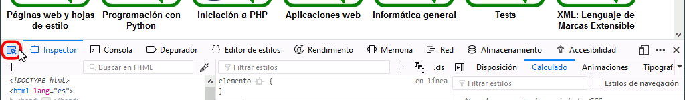
A partir de ese momento, al pasar el cursor sobre los elementos de la página, se van resaltando sus límites y mostrando la etiqueta correspondiente (en un bocadillo negro). Además en la parte inferior se resalta con un fondo azul claro el código html correspondiente al elemento.
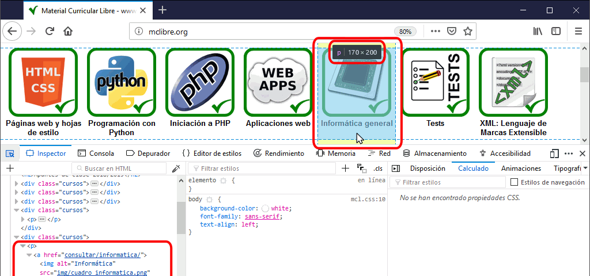
Al hacer clic en un elemento, el selector se desactiva y en la parte inferior se muestra:
en la parte izquierda, el código html y la jerarquía de etiquetas
en la parte central, las reglas de estilo que se aplican al elemento
en la parte derecha, información sobre el elemento
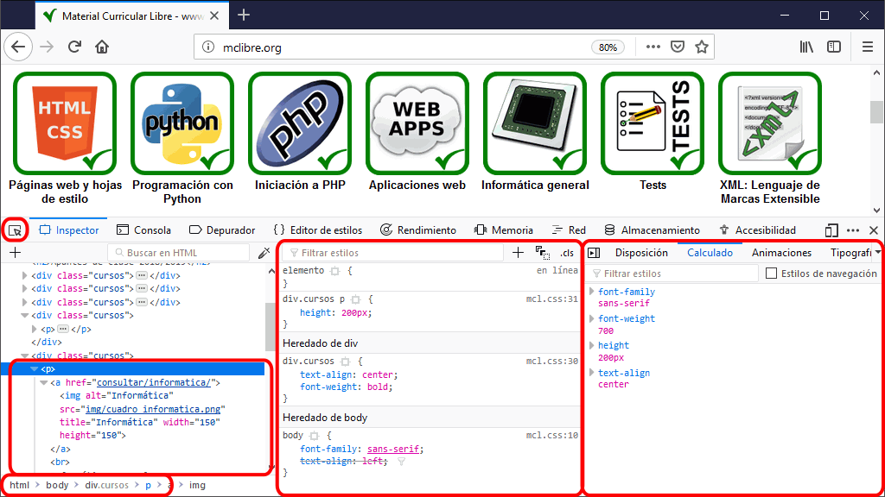
En la parte del css, la información se puede ver de diferentes formas.
En la parte central, se muestran los fragmentos de la hoja de estilo que define las propiedades que se aplican al elemento.
En el ejemplo siguiente, en el que se ha seleccionado un párrafo <p>, se muestran todas las propiedades que afecta al párrafo ordenadas por reglas. Para cada regla se muestra el selector, el nombre de la hoja de estilo y el número de línea en la que se encuentra y las propiedades.
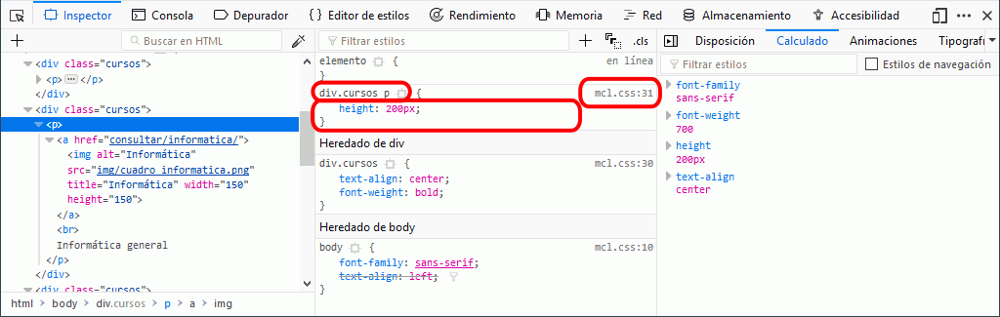
Si una misma propiedad se establece en diferentes reglas, las propiedades que no se aplican por tener la regla menos prioridad se muestran tachadas.
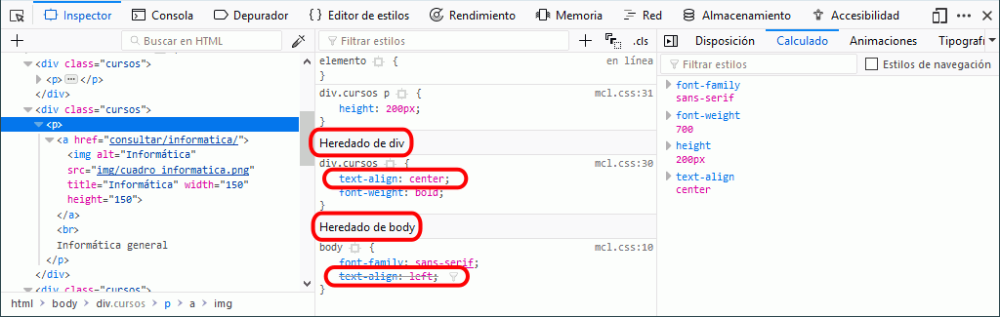
En la pestaña Calculado de la parte derecha, se muestra la misma información, pero ordenada por propiedades. Haciendo clic en los triángulos laterales, se detalla la hoja de estilo y regla que ha establecido la propiedad.
En la parte central, se pueden modificar las hojas de estilo y ver el resultado inmediatamente. Estas modificaciones son "virtuales" y al actualizar la página se vuelve a la vista original.
Puede modificar el valor de una propiedad haciendo doble clic en el valor y escribiendo el nuevo valor:
Puede añadir nuevas propiedades:
Puede desactivar propiedades haciendo clic en las casillas situadas a la izquierda de la propiedad: